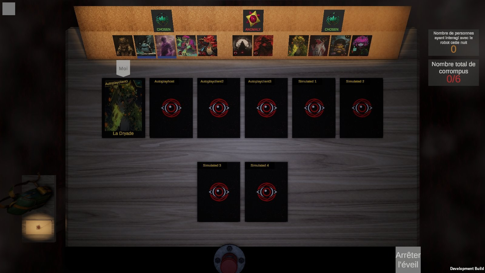

La nuit : est-ce à moi de jouer ? (tour 3, le parchemin)
Tes retours du tour 2 : W6, le parchemin, « j'aime bien cette idée, itère ». Les autres (lampe, bouton, caméra,
carte, yeux) sont mises de côté.
Deux questions : comment il apparaît et ce qui en reste pendant ton tour, puis les mots écrits dessus. Endormi,
l'écran reste celui d'aujourd'hui. Parchemin et sceau : ceux du livre des personnages. Mêmes vraies captures
(client en réseau, la Dryade).
1. Le parchemin : comment il vient, ce qui reste
Même texte partout (« À toi », comme au tour 2) ; les mots sont la question 2.
P1Le sceau, puis plus rien
W6 avec un sceau de cire qui s'écrase dessus au moment où il finit de se dérouler. Il se ré-enroule
après 2 secondes et ne laisse rien : le moment marque, la suite c'est le plateau éclairé d'aujourd'hui.


À toi
P2Il se range à côté de ta carte
Après 2 secondes, il s'enroule en un petit rouleau scellé qui va se poser sous ta carte et y reste
tout ton tour : un coup d'œil suffit pour savoir que c'est encore à toi. Il disparaît quand tu te rendors.
À toi
P3Il se consume
Après 2 secondes, il s'affine en une bande au bord de la table, de ton côté, qui brûle par les deux bouts
au rythme du temps de ton éveil : c'est aussi ton minuteur. Les dernières braises s'éteignent quand tu te rendors.
À toi
P4Il descend du liège
Il se déroule vers le bas depuis le liège, comme une bannière qu'on lâche, puis remonte après 2 secondes
en ne laissant qu'un bout de parchemin qui pend sous le liège tout ton tour. Il remonte complètement quand tu te
rendors.
À toi
2. Les mots
Le parchemin déroulé (P1 au moment 2). Le jeu vouvoie aujourd'hui (« Vous vous éveillez... », « Arrêter l'éveil »).
Le nom du rôle n'est vu que par toi.
T1« À toi »
Le plus court, se lit d'un coup d'œil. Tutoie.
À toi
T2« À vous de jouer »
Dit ce qu'il faut faire, vouvoie comme le reste du jeu.
À vous de jouer
T3« Vous vous éveillez »
Le texte d'aujourd'hui, sur le parchemin : la nuit parle d'éveil, pas de tour.
Vous vous éveillez
T4« La Dryade s'éveille »
Le nom de ton rôle : rappelle qui tu joues au moment d'agir.
La Dryade s'éveille